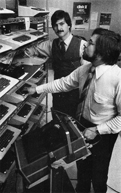
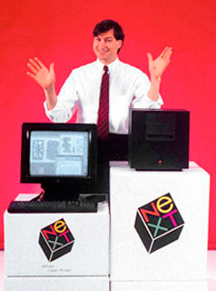
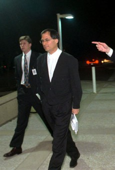
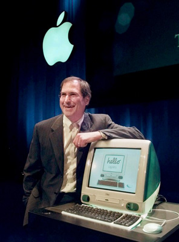
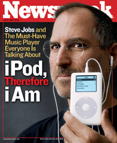
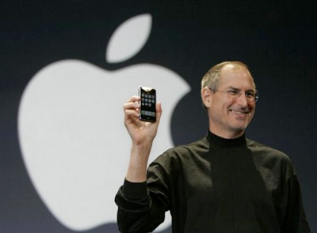
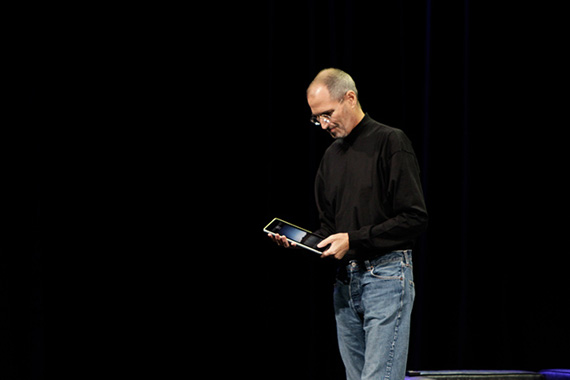

Steve Jobs. the short Biografi
Youth (1955-75)
Steven Paul Jobs was born in San Francisco, California on February 24 1955. His biological parents, unwed college graduates Joanne Simpson and Abdulfattah Jandali, had him adopted by a lower-middle-class couple from south of the Bay Area, Paul and Clara Jobs.
Young Steve grew up in a valley of apricot orchards that was already turning into the world center of computer technology: Silicon Valley. It was not uncommon to see engineers fill their garages with all kind of electronic devices in that part of California. Steve Jobs was fascinated by these, and thats why, in 1969, he met with a computer whiz kid who shared his interests in electronics: Stephen Wozniak - commonly known as Woz. Steve and Woz quickly became friends even though Woz was five years older.
When Steve Jobs reached college age, he decided he would go to Reed College in Oregon. It was an expensive liberal arts college, way too pricey for his modest parents; but they had to keep their promise to Steve's biological mother, and therefore paid for the tuition. Steve only stayed at Reed for one semester though, after which he dropped out. He then spent a lot of time learning about Eastern mysticism and adopted strange diets, fasting or eating only fruits: it was his hippie period. He even traveled to India with a friend to seek enlightenment at age 19.
Apple's early years (1975-81)
After Steve came back to the Valley, he focused on Woz's work on a computer board. Woz was attending a group of early personal computer hobbyists called the Homebrew Computer Club, where he got the idea of designing his own computer (which consisted only of a circuit board at the time). Steve Jobs saw that many people were interested in his friend's brilliant work: he suggested they sell the board to them. Apple Computer was born.
Apple's first year in business consisted of assembling the boards in Steve's garage and driving to local computer stores to try and sell them. Meanwhile, Woz worked on a new, much improved computer, the Apple II, which he basically finished in 1977. Both Woz and Steve knew the Apple II was a breakthrough computer, much more advanced than anything the market had ever seen. That's why Steve set out to find venture capitalists to fund Apple's expansion. After a while, he made a deal with Mike Markkula, an enthusiastic former Intel executive who invested $250,000 in their business and assured them their company would enter the Fortune 500 list in less than two years.
Mike was right. The Apple II soon became the symbol of the personal computing revolution worldwide. It crushed all competition both because of its breakthrough hardware features (including its color graphics) and its very large supply of compatible software. The key to Apple II's success was actually VisiCalc, the first spreadsheet program ever brought to market. Thousands of people bought Apple IIs just to use it. As a result, the company grew at a very fast rate, and went public after just four years of existence, in December 1980. Steve Jobs' net worth passed the $200 million mark on that day - he was only 25.
But Apple's success was threatened, as industry giant IBM was planning to enter the personal computer market in 1981. Apple had to fight back or they would go out of business in a couple of years' time. Their Apple III computer had already bombed on the marketplace. They focused all their energy on a project headed by Steve Jobs: Lisa. He had named it after his ex-girlfriend's daughter, although he denied all paternity (that difficult situation actually caused him to miss Time Magazine's Man of the Year 1982). The Lisa computer was a breakthrough because it used a graphical user interface instead of a command-line interface. This technology, like many others that would revolutionize computing, was invented at Xerox PARC - but Apple was the first company to bring it to market.
The NeXT years (1985-95)
Yet his main passion was still to make great computers. In September 1985, he announced to the Apple board that he was going to found a new company, called NeXT, to build an advanced computer for higher education and scientific research. He was going to take with him some of the best engineers and salesmen from the Mac team. Apple disapproved and threatened to sue him. It was at that point that Steve left his company for good and sold almost all of his stock in disgust.
NeXT started work on its computer in early 1986, after Apple dropped its lawsuit. Steve aimed at the highest possible standards for his new machine: he wanted the best hardware, built in the world's most automated factory, and running the most advanced software possible. He decided the computer's operating system, NeXTSTEP, would be based on UNIX, the most robust and most complex system in the world - but that it would also be as easy to use as a Macintosh, thanks to its own graphical user interface. In addition, it would make software development real easy with its object-oriented programming technology. These ambitious plans put off the release date of the computer - called the NeXT Cube - to October 1988.
However great it was, the NeXT Cube didn't sell. It was overpriced and missing useful software. NeXT struggled for years to sell it, expanding its target from just education to businesses, and introducing a cheaper box, the NeXT Station. Yet the number of computers they sold each month remained in the hundreds. The company was bleeding money and all its co-founders left one after the other, as well as its first outside investor, Texan billionaire Ross Perot. By 1993, NeXT had to give up its hardware business and focus only on promoting its advanced software technology. NeXT Software, far from beating Apple, had turned into a niche software development business. Steve was devastated.
In addition, his investment in Pixar also seemed to lead nowhere. The small company had tried to sell advanced graphic workstations to specialized markets since it had been founded, without success. Jobs shut down Pixar's hardware operations in 1990, decided to focus on developing an advanced 3D language called RenderMan. He kept the animation division, headed by John Lasseter, only because its work on TV commercials were one of the company's only source of revenues. Hope was brought by a contract with Disney to make a full feature film with computers in 1991. But by the end of 1993, the contract was canceled by Burbank. With both his ventures failing, Steve had reached the nadir of his career. He spent most of his days at home with his young son Reed and his wife Laurene, whom he had married in 1991.
Comeback (1995-97)
Fortunately, as John Lasseter came back to Disney with an improved script for the feature film, called Toy Story, the project got back on track. The movie was to be released for Thanksgiving 1995. As the date approached, Steve Jobs realized what an incredible power the Disney brand was. He decided Pixar would go public the week after the release of Toy Story, cashing in on the media hype surrounding the first computer-generated animation movie of all time. It worked wonders: Toy Story's box-office success was only surpassed by the Pixar stock's success on Wall Street. Steve Jobs, who owned 80% of the company, saw his net worth rise to over $1.5 billion - five times the money he had ever made at Apple in the 1980s!
Speaking of Apple, the fruit company was in the midst of his worst year ever. After the release of Windows 95, the Mac, which had turned profitable but had failed to evolve for a decade while Steve Jobs was away, started losing market share at an alarming rate. By 1996, the company's newly appointed CEO, Gil Amelio, was looking for new software to replace the old and bloated Mac OS. He eventually chose Steve's NeXTSTEP. Apple paid $400 million to acquire NeXT, and Steve was back to the company that had thrown him out a decade earlier. His official title was that of “informal adviser to the CEO.”
But when Amelio announced Apple's losses of $700 million for the first quarter of 1997, the board decided it was time to get rid of this terrible manager. Steve Jobs organized a board coup and was named interim CEO of Apple in July 1997. He immediately started an extensive review of the whole company, cutting the number of projects from hundreds to a dozen. The number of hardware products would be cut down to just four. He also made a shocking announcement at Macworld Boston in August: Apple would be teaming up with its arch-rival Microsoft, in an unprecedented deal that would put an end to interminable patent disputes.
Apple back on track (1998-2001)
Steve Jobs quickly gave confidence back to the Apple community. The company launched a revolutionary marketing campaign around a new slogan: Think Different, spreading the idea that people who used Macs were dreamers who could change the world. As the Apple brand grew stronger, the company launched a couple of new successful products, the Power Mac G3 and the PowerBook. Six months after he had come back, Steve Jobs had led the company to profitability.
Yet Apple's resurgence really came a little later, when Steve introduced a new, amazing consumer desktop computer: iMac. Introduced in May 1998, it was Apple's first really innovative product basically since the original Macintosh in 1984. The iMac's stunning translucent design blew away the whole personal computer industry, which had failed to produce anything but black or beige boxes for over a decade. Moreover, iMac was a hot seller, and it was essential in bringing back tons of developers to the Mac platform. Design innovations continued throughout 1998 and 1999 with the colored iMacs and iBook, Apple's consumer notebook. After three years in charge, Steve Jobs had brought Apple back to greatness. That's why he finally accepted to become full-time CEO of Apple in January 2000 - the first time one man became CEO of two public companies at the same time.
Still, the very reason Steve Jobs was brought back to Apple had not yet materialize - it was to bring NeXT's software technology to the Mac platform. This eventually happened in early 2001, as Apple released the first version of its breakthrough operating system, Mac OS X. Mac OS X was really NeXTSTEP with a Mac facade. But it turned out an essential asset to Apple as the company developed breakthrough applications for its Macs as part of the digital hub strategy.
The digital hub strategy was unveiled by Steve Jobs at Macworld San Francisco in January 2001. It was a vision for the future of the personal computer. Although many analysts and self-appointed experts were proclaiming PCs would disappear within a couple of years to be replaced by Internet terminals, Apple believed they would evolve into digital centers or hubs for our new digital lifestyles. In other words, the PC would become the centerpiece of our new lives filled with digital cameras and camcorders, MP3 players, smart phones and other digital devices. The digital hub strategy led Apple to develop a suite of applications designed to manage our new lifestyle, the so-called iApps: iMovie (1999), iTunes (2001), iDVD (2001), iPhoto (2002), iCal and iSync (2002), GarageBand (2004) and finally iWeb (2006). The iApps were a strategic move in Apple's greater plan to gain market share over the PC, as there was simply no equivalent solution on the Windows platform. Other moves included an aggressive ad campaign (Switchers) and the start of Apple's retail operations in mid-2001.
The iPod revolution (2001-2006)
However the greatest momentum for Apple came from an unexpected source: the iPod. iPod was an integral part of the digital hub strategy. It was started in early 2001, when Steve Jobs realized that he had misplaced his enthusiasm for “desktop video”, i.e. the ability to edit movies on the computer - which was still far from mainstream. What was really hot at the turn of the century was not movies but digital music, as exemplified by the success of Napster. He focused on catching up and bought an outside hardware developer to work on Apple's own MP3 player, which was brought to market in record time, just in time for 2001's holiday season.
iPod's breakthrough features - its beautiful design, its brilliant user interface and click wheel, its fast FireWire connectivity and its ability to sync with iTunes seamlessly - made it a hot seller from the start. For the first time, people were buying Macs just so they could use this little music player the size of a cigarette box. Apple cashed in on that success and went further in the following years, first by making iPod Windows-compatible in 2002, then by opening the iTunes Music Store and developing a Windows version of iTunes in 2003.
As of 2006, after Apple had continually pushed innovation in its music business by introducing iPod mini in 2004, iPod shuffle then iPod nano in 2005, and expanded its Music Store internationally, it had become the undisputed leader of the new digital music era. A significant landmark was passed in 2006 when Apple's revenues from iPod equaled those made on computers. For the first time in its history, the firm from Cupertino had left its niche markets to become as influential a player in consumer electronics as Microsoft was in the PC space. iPod's market share was close to 75%!
The Pixar-Disney merger (2003-2006)
Interestingly enough, iPod also played a critical role in setting Pixar's future. After having released success after success (A Bug's Life (1998), Toy Story 2 (1999), Monsters Inc. (2001) and Finding Nemo (2003)), the animation studio had decided to let go of its distribution deal with Disney, mainly because of increasing tensions between Steve Jobs and Disney CEO Michael Eisner. Steve Jobs openly said he would not make another deal with the Magic Kingdom until Eisner was out. Turns out his opinion was shared by many an executive at Disney - including Walt's own nephew, Roy Disney, who started a public campaign to oust the company's CEO. This led to the nomination of Bob Iger as new CEO in March 2005.
Steve Jobs and Bob Iger started working together because Apple decided to sell TV shows on its iTunes store. In October 2005, in front of an audience of stunned journalists, Steve Jobs shook hands (as Apple's boss) with the new CEO of Disney - implying a renewed cooperation with Pixar in the near future. This eventually led to no less than the merger of both companies, announced in January 2006. Steve Jobs, who still owned half of Pixar's stock, became Disney's largest individual shareholder (owning 7% of the company's stock). As for Pixar executives Ed Catmull and John Lasseter, they were given critical roles in the new studio.
Apple Inc. (2006-today)
2006 was a critical year for Apple in three respects.
The first was the success of the Mac. Mac sales were finally taking off, and after years of struggle to gain market share, its growth rate was exceeding that of the PC. Several factors accounted for this historic change: the success of iPod of course, and the positive side effect it had on the Apple brand. The move to Intel as well: after years of fighting the so-called Wintel monopoly, Steve had announced in 2005 that the company would start using Intel processors in their Macs form then on. The entire product line was transitioned over in less than a year. Intel Macs were faster and cheaper, but their main advantage was their ability to run Windows - which was a key argument in making Windows users switch, afraid as they were not to find their favorite software on the Mac. Finally, Apple was encountering unexpected success with its chain of retail stores, the fastest growing in the US.
The second crucial development from 2006 was the full acceptance by Apple of its new status of consumer electronics powerhouse, thanks to the success of iPod, the walkman of the digital age. It became obvious in February 2006, when the company released iPod hi-fi, a boom-box designed to work only with iPod (which was discontinued the following year), and Apple TV less than a year later. But the biggest move of course came in January 2007, when Steve Jobs introduced iPhone at Macworld. iPhone was arguably the ultimate Apple product. Its beautiful hardware ran no less than Apple's full operating system, OS X. Its multi-touch technology, Web surfing and iPod capabilities, easy-to-use interface, and more, made it a smartphone “light-years ahead of its competition”, as Steve Jobs said. It shook the phone industry to its core, down to the exclusive deal that Apple cut with AT&T for subscription plans. Three years after it was introduced, it is already fair to say that iPhone will go down in history as the first digital convergence device, equivalent to putting a computer, an iPod and a phone in your pocket. It was such an obvious part of Apple's move outside the PC business that Steve announced at the end of Macworld 2007 that the company's name would be changed from Apple Computer Inc. to Apple Inc.
Finally, the third major event of 2006 for Steve was the so-called backdating scandal. Backdating consists of picking a date in the past, when a stock's value is lower, to assign the exercise price of options. It is an illegal practice that was commonplace in Silicon Valley until it was exposed by a Wall Street Journal article in 2006. Apple swiftly hired lawyers to lead an internal investigation of its own records. They did find irregularities, which were confirmed by the SEC in mid-2007. Two big frauds were unveiled that took place in 2000 and 2001, under Steve Jobs' leadership. However he was cleared the following year as the SEC found out he had no idea of the legal or accounting implications of the matter. The SEC only charged Apple's former CFO and legal counsel with fraud. The scandal was significant in the sense that it raised the issue of Apple's future without Steve Jobs... But the main occasion this issue was raised was not the SEC investigation, it was unfortunately after Steve's health problems.
In late 2003, Steve was diagnosed with pancreatic cancer. Fortunately, his tumor was not of the deadly type: Steve would be saved if he agreed to have surgery. But he didn't, and for nine long months, followed a special type of diet that he thought would cure him from the disease. It was only in August 2004 that he agreed to have the surgery. Everybody thought the troubles were over, as he claimed he was cured. Of course there is no such thing as being cured from cancer, and in 2008, people started commenting heavily on Steve's being increasingly thinner. Although he and Apple kept on denying any serious problem, in December 2008, they announced to everyone's surprise that the CEO would not go on stage for the last Macworld keynote in history in January 2009. Steve Jobs took six months off (the first half of 2009), as he was awaiting a liver transplant - which he got in April 2009. The whole story of Steve's cancer raised many a discussion about a public company's necessary transparency regarding its CEO's health, especially when that CEO is as essential to its market value as Steve Jobs is to Apple's.
2010 has seen the incredible rebirth of Steve Jobs as a very active CEO. In sharp contrast with 2009, he came back on stage for many Apple events that year, and surprised the world many times over with insanely great new Apple products. The biggest announcement of all was undeniably iPad, Apple's iOS-based tablet, which Steve unveiled on January 27, 2010. At the industry conference D8 in June 2010, Steve Jobs clearly stated that in his opinion, iPad had started the post-PC era, and that PCs would eventually become like trucks, a marginal part of a market dominated by portable tablets... If this comes true, this one man Steve Jobs will have played a crucial part in both giving birth and putting an end to the personal computer industry.
Conclusion
Steve Jobs is undeniably an extraordinary man by any standard. He has left his mark on no less than five industries: personal computers with Apple II and Macintosh, music with iPod and iTunes, phone with iPhone, and animation with Pixar. The middle-class hippie kid with no college education that he was built a computer empire and became a multi-millionaire in a few years, was fired from his own company before coming back a decade later to save it and turn it into one of the world's most influential corporations, with millions of fans around the world. He has also contributed to the creation of the new leader in animated movies for decades to come. He has been called a fluke for years, but is now widely acknowledged as one the world's most eminent business executives and an unrivaled visionary. He has changed millions of lives by making technology easy-to-use, exciting and beautiful And you know what the best part is? He's not done yet.